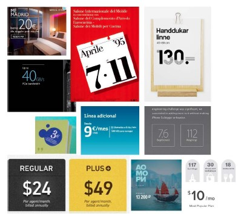

Мой Справочник | WEB-DESIGN | Иконки (UI)
Рекомендации:
- Человек мыслит образами, и иконки должны помогать создавать правильный образ
- Иконки нужно применять так же в описании этапов работы компании/услуги
- Все иконки должны быть в едином стиле
- Важно не переборщить с иконками
- Если иконка навигационная - нужно создать эффект наведения
- Анимация для иконок имеет место быть, но должна быть легкой
-
4 основных СТИЛЯ иконок:
- линейные (универсальные))
- иллюстрации (по тематике)
- объёмные (устаревшие)
- простые (галочки, крестики, булеты, точки и т.д.)
Навигационные иконки
- Вверх, вниз (пролистать)
- Влево, вправо (карусель)
- Иконки соц. сетей
- Корзина
Информационные иконки
- Иконки преимуществ (пример, грузовик - доставка)
Ресурсы для скачивания иконок
- flaticon.com - SVG (с настройками цвета)
- Freepik
- 365psd.com
- Material Icons
- SVG-спрайт онлайн IcoMoon
- PNG-спрайт онлайн
- Иконки - Ionicons
- Flaticon - Бесплатыне png и svg
- Иконки - Streamlineicons
Sharing
Favicons
Иконки лучше использовать с подписками или внутри кнопок
Интерфейс
То, как пользователь взаимодействует с чем-либо (пульт телевизора, кран в душ. кабине, форма на сайте).
UI-дизайн (User Interface)
Пользовательский интерфейс, как будет выглядеть UX-интерфейс (цвет, кнопки, визуал, внешний вид и т.д.)
РЕАЛИЗМ |

|
Стиль, при котором элементы интерфейса максимально приближены к реальным. Его достаточно тяжело реализовывать. | ||
ПЛОСКИЙ СТИЛЬ (FLAT) |

|
Минималистичный дизайн, без лишних эффектов. | ||
UI-kit

Макет с расположением на нем состояние элементов пользовательского интерфейса. В него входят:
- ТИПОГРАФИКА (заголовок, подзаголовок, наборный текст, ссылки, состояние ссылок при наведении)
- КНОПКИ, их состояния (кнопки - один из самых важных элементов, ваоидация)
- ЭЛЕМЕНТЫ ФОРМ, их состояния (поля, чекбоксы, радиобаттоны)
- ПОП-АПЫ, АЛЁРТЫ
- ПАГИНАЦИЯ, ХЛЕБНЫЕ КРОШКИ
- ПРЕЛОАДЕР
- МЕНЮ, НАВИГАЦИЯ, САЙДБАР
Формы
Кнопки |

c = высота шрифта;
|
Самая важная кнопка выглядит соответствуеще.
Тёплые тона притягивают. Если поля форма достаточно коротки, то есть смысл задать кнопке ширину как у полей Нужно повторять призыв к действию, дублировать кнопку в различных блоках Правильно располагать НАЗАД-ВПЕРЁД, а не ВПЕРЁД-НАЗАД В большие кнопки легче попасть, можно использовать маленький кегль, много пространства в кнопке выглядит хорошо. Отделяйте главные действия от второстепенных. В кнопках тоже должна быть иерархичность. Не должно быть на одном экране несколько одинаковых кнопок. 
|
||
Поля форм |
Меньше полей, менше кликов. Функциональные кнопки можно отображать при наведении (например на строку товара в
таблице)
Если полей не много, то имеет смысл сразу их показывать без поп-апов Чекбоксы и радио-кнопки лучше в столбик, в строчку не удобно для пользователей * - такие звёздочки уже не рисуют Группировать поля, схожие по смыслу в отдельные блоки с заголовками Постепенное раскрытие действий, по мере заполнения Форма как предложение, заголовок - подлежащее, кнопка - сказуемое Избегать повторений слов в форме Не нужно заставлять пользователей вводить излишнюю информацию |
|||
Лейблы |
Лучше располагать над полями, если рядом с полями, то лучше выравнивать по правому краю, чтобы не было пустот | |||
Селекты, радио-кнопки, чекбоксы |
Если вариантов выбора менее 6, то лучше делать не select, а радио-кнопки
Радио-кнопки лучше располагать столбиком, удобно для пользователей Подтверждение по умолчанию (checked) |
|||

Фактойды
Миниформаты, цитаты, фактойды, реклама применяются для разнообразия в композиции.
Фактойд - это утверждение, представляемое в прессе, но без источника и подтверждения, целью которого является привлечение внимания.
